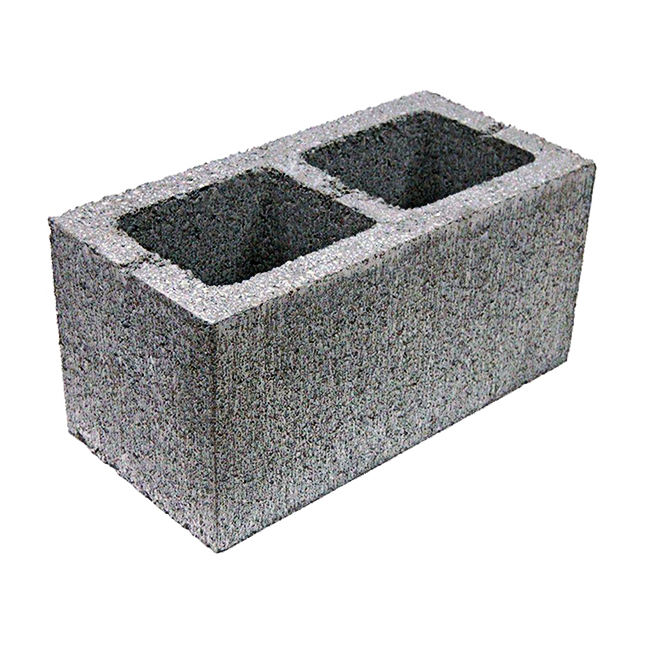

Брусчатка и цементные изделия
Качественная продукция по честной цене в районе около Талдыкорганской области.
Расположение нашей производства находится в Алматинской области, Ескельдинского района, поселок Карабулак. ИП "Вахрушев" занимается производство брусчатке, песко-пенноблочный изделий. Брусчатка различных форм и цветов, также идет производство из той же смеси вершин крыш, и накладки на стену из гипсового материала.
